IEEE INFOCOM 2026
Publication
mmWave-Aided Unified Speech Enhancement and Separation without Speaker Count Prior
Dachao Han (XJTU), Teng Huang (XJTU), Han Ding (XJTU), Cui Zhao (XJTU), Fei Wang (XJTU), Ge Wang (XJTU), Wei Xi (XJTU)
RadioSEP is a unified mmWave-audio multimodal framework for speech enhancement and multi-speaker separation without requiring prior knowledge of the number of speakers.
mmWave-Audio Speech Processing
XJTU
Overview
RadioSEP addresses a practical limitation in speech enhancement and separation: most existing systems require task-specific models and explicit prior knowledge of the speaker count. In real-world smart-home or voice-assistant scenarios, the number of speakers is often unknown and dynamic, and the audio may include overlapping voices and background noise.
RadioSEP uses a commercial mmWave radar together with noisy audio to build a unified multimodal pipeline. The radar detects and localizes active speakers, extracts speaker-specific physical features from vocal-fold and vocal-tract movements, and provides speaker count information to a single deep neural network that generates the corresponding clean speech streams.
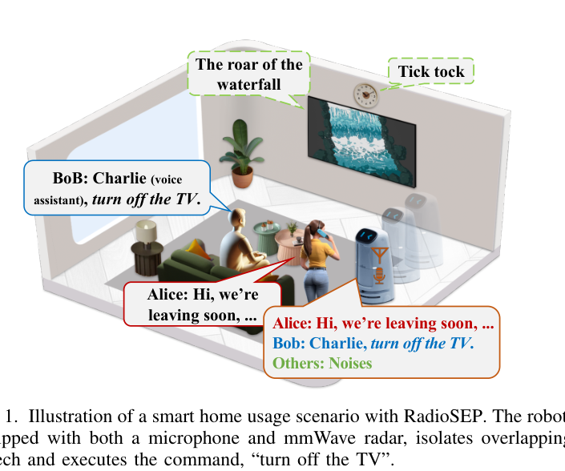
Main Contributions
- Presents RadioSEP, an end-to-end mmWave-audio multimodal framework for both speech enhancement and multi-speaker separation.
- Removes the need for speaker count prior by using mmWave radar to detect, localize, and profile speakers before speech generation.
- Extracts speaker-specific physical features from mmWave phase and magnitude variations caused by vocal-fold and vocal-tract motion.
- Designs a unified DNN with dual-branch feature extraction, cross-attention based mmWave-audio fusion, and speaker-aware separation.
- Introduces a revised CGAN-based cross-modality data generation method to synthesize mmWave-audio pairs for pre-training and improve generalization.
System Overview
RadioSEP has three core components: speaker perception, cross-modality data generation, and the unified RadioSEP DNN framework. During inference, speaker perception estimates the number of active speakers and produces mmWave-based identity features. During training, CGAN-generated mmWave data augments public speech data, and the DNN is first pre-trained then fine-tuned on real multimodal data.
Speaker Perception with mmWave Radar
RadioSEP uses range-angle heatmaps, MVDR, CFAR, DBSCAN clustering, and Hungarian tracking to detect and localize speakers. This lets the system estimate the active speaker count and filter out silent moving users that may otherwise be detected by radar.
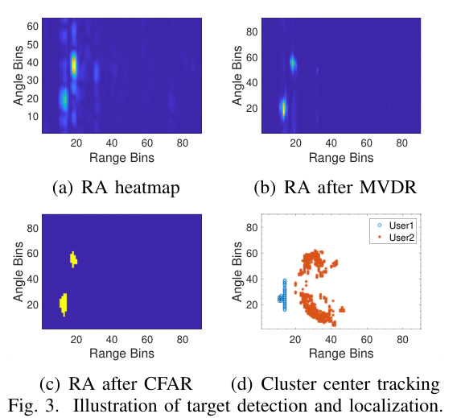
The paper further connects mmWave sensing to the source-filter model of speech production. Vocal folds generate source vibrations, while the vocal tract shapes the signal. RadioSEP monitors phase and magnitude changes at the target range-angle bins to capture speaker-specific articulatory features.
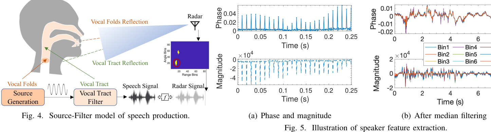
A feasibility study on 20 users shows that extracted mmWave features support speaker classification with 75.28% average accuracy, confirming that the radar features encode speaker-specific physical characteristics rather than only sentence content.
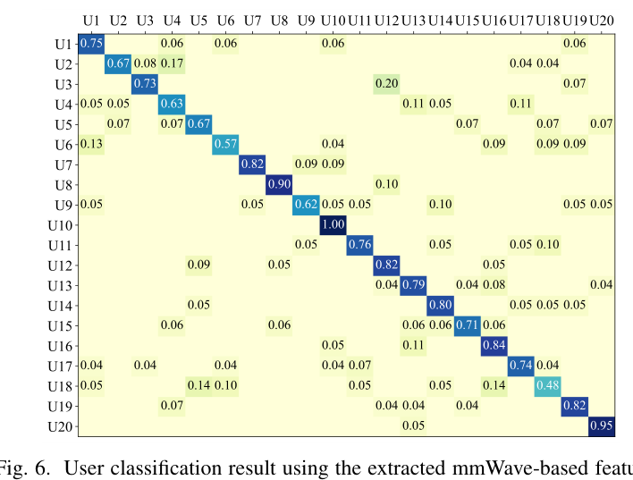
RadioSEP Network
The unified network has a dual-branch feature extractor, a fusion block, and a separation block. The audio branch processes noisy speech, while the radar branch processes per-speaker mmWave features. The fusion block uses cross-attention to align and combine audio and radar information, then the separation block generates the required number of clean speech streams according to the radar-estimated speaker count.
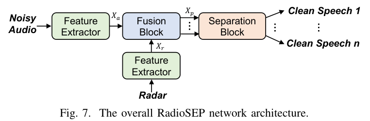
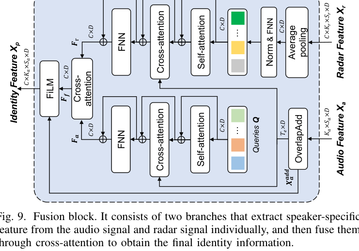
Cross-Modality Data Generation
Because public multimodal mmWave-audio datasets are scarce, RadioSEP uses a revised CGAN to generate mmWave signals from public speech data. The discriminator is modified into a classifier that predicts speaker identities, encouraging generated mmWave data to preserve user-specific physical features. The generated data is used for pre-training, then the model is fine-tuned on real collected multimodal data.
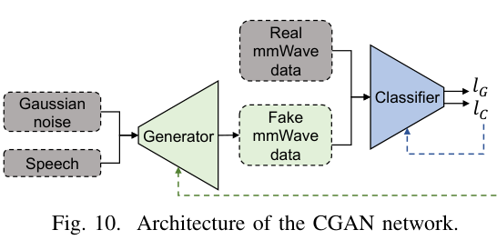
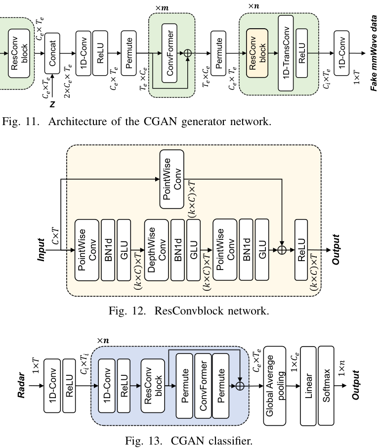
Dataset and Implementation
The prototype uses a TI IWR6843ISK mmWave radar with DCA1000EVM and a Soaiy WS10A microphone. The radar uses 3 Tx and 4 Rx antennas, 4 GHz bandwidth, and a 1200 Hz sampling rate. The dataset includes 20 volunteers reading 100 randomly selected TIMIT sentences, with 1,960 words in total. The paper also evaluates two lab environments to test robustness under environmental changes.
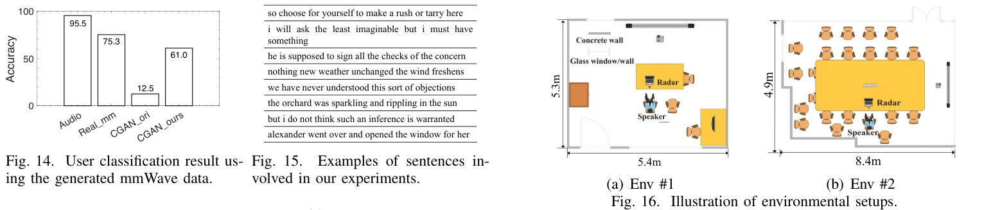
Overall Performance
RadioSEP consistently outperforms audio-only and prior multimodal baselines across enhancement, 2-speaker separation, and 3-speaker separation. In the main comparison, RadioSEP achieves 13.94 dB SiSNR for enhancement, 19.13 dB SiSNR for 2-mix separation, and 14.62 dB SiSNR for 3-mix separation.
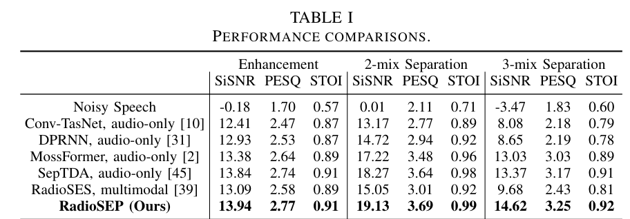
Generalization and Robustness
RadioSEP maintains strong performance on unseen users and unseen environments. In unseen-user tests, RadioSEP reaches 13.70 dB SiSNR for enhancement and 16.37 dB SiSNR for 2-mix separation, while RadioSEP* reaches 18.31 dB SiSNR on the unseen-user/environment setting reported in the table.
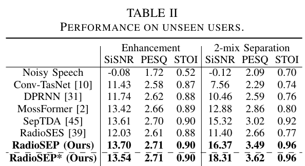
The system is also evaluated under different speaker angles, distances, and environments. The results show only mild degradation across 0-30 degrees, 0.5-1.5 m, and a second environment.
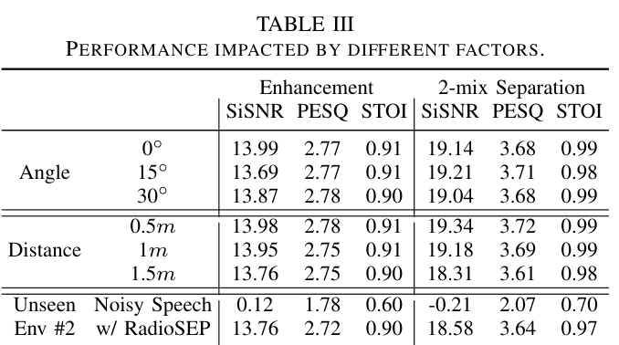
More Speakers and Ablation
RadioSEP scales beyond the 2- and 3-speaker cases. On 4-mix and 5-mix separation, it still outperforms RadioSES, achieving 12.87 dB SiSNR for 4-mix and 11.56 dB SiSNR for 5-mix separation.
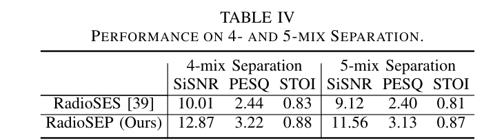
The ablation study shows that CGAN-generated/noisy radar replacement improves unseen-speaker generalization, cross-attention style fusion is important, and the model remains reasonably robust even when radar input partially fails.
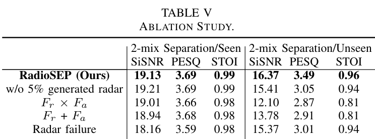
Resources
{kind=link}
{kind=link}
{kind=link}
Citation
@inproceedings{han2026radiosep,
title = {mmWave-Aided Unified Speech Enhancement and Separation without Speaker Count Prior},
author = {Han, Dachao and Huang, Teng and Ding, Han and Zhao, Cui and Wang, Fei and Wang, Ge and Xi, Wei},
booktitle = {IEEE INFOCOM},
year = {2026}
}